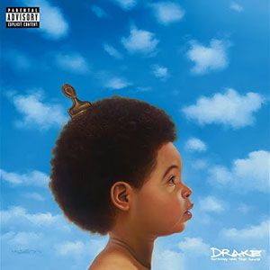

Inicio
Drake (Aubrey Drake Graham) es un cantante de hip hop, compositor, productor y actor canadienseSe trata de uno de los artistas de música urbana más exitosos de la historia. Su combinación de rock y pop ha logrado ventas millonarias en todo el mundo.
Biografía
Aubrey Drake Graham (Toronto, 24 de octubre de 1986) conocido simplemente como Drake, es un cantante, compositor, productor discográfico y actor canadiense. Siendo una figura influyente en la música popular contemporánea, Drake ha sido acreditado por popularizar el canto y la sensibilidad del R&B en el hip hop. Al obtener reconocimiento al interpretar a Jimmy Brooks en la serie dramática para adolescentes de CTV Degrassi: The Next Generation (2001-2008), Drake siguió una carrera en la música lanzando su mixtape debut Room for Improvement en 2006. Siguió esto con los mixtapes Comeback Season (2007) y So Far Gone (2009) antes de firmar con Young Money Entertainment.
Premios
Drake es el artista de sencillos digitales con mayor certificación en los Estados Unidos, con 142
millones de unidades vendidas según las ventas combinadas y las transmisiones a pedido.Su sencillo con
la certificación más alta es «God's Plan» (décuple platino), seguido de «Hotline Bling», que fue
certificado óctuple platino. Tiene varios récords en la lista Billboard Hot 100; tiene la mayor cantidad
de canciones en las listas de cualquier artista (258).
A partir de 2021, Drake ha ganado cuatro Premios Grammy de 47 nominaciones. También ha ganado un récord
de 29 Billboard Music Awards. En 2017, superó el récord de Adele de más victorias en los Billboard Music
Awards en una noche, ganando 13 premios de 22 nominaciones. Fue nombrado Artista de la década en los
Billboard Music Awards de 2021. El editor de Billboard, Ernest Baker, afirmó que «Drake logró gobernar
el hip-hop en 2014», y agregó que «el mejor rapero de 2014 no necesitaba un nuevo álbum o un sencillo
exitoso para demostrar su dominio».
Discografía
La discografía de Drake, el rapero, cantante, compositor, productor discográfico y actor Canadiense está conformada por siete álbumes de estudio, cuatro extended play, siete mixtapes, ochenta y cinco sencillos, ocho sencillos promocionales y treinta y seis vídeos musicales. Su música es distribuida por los sellos discográficos Republic Records, Young Money Entertainment y Cash Money Records.

Take Care
Honestly never mind

if you´re reading this its too late
views

So Far Gone
